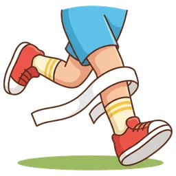
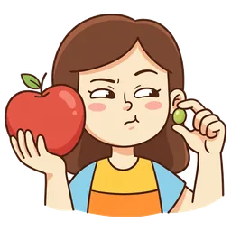

忙碌的
 启蒙 StartersA cute cartoon boy carrying a huge stack of colorful books that covers his face.
启蒙 StartersA cute cartoon boy carrying a huge stack of colorful books that covers his face. MoversA cartoon mom holding a crying baby in one arm while stirring a cooking pot with her other hand.
MoversA cartoon mom holding a crying baby in one arm while stirring a cooking pot with her other hand. KETA close-up of a person's hands typing rapidly on a laptop keyboard while holding a ringing telephone with their shoulder.
KETA close-up of a person's hands typing rapidly on a laptop keyboard while holding a ringing telephone with their shoulder.快乐的
 启蒙 StartersA cute cartoon girl jumping high in the air with a huge, joyful smile.
启蒙 StartersA cute cartoon girl jumping high in the air with a huge, joyful smile.还没画
MoversA happy cartoon boy hugging a big, fluffy dog that is licking his cheek. KETA close-up of a smiling child's face wearing a bright, colorful birthday party hat while blowing a party horn.
KETA close-up of a smiling child's face wearing a bright, colorful birthday party hat while blowing a party horn.小的
还没画
启蒙 StartersA tiny, cute ladybug sitting on a single blade of green grass. MoversA tiny yellow chick standing next to a giant, massive brown bear.
MoversA tiny yellow chick standing next to a giant, massive brown bear. KETA close-up of a giant adult hand gently holding a tiny, miniature toy car on one finger.
KETA close-up of a giant adult hand gently holding a tiny, miniature toy car on one finger.铅笔
 启蒙 StartersA single, bright yellow cartoon pencil with a pink eraser.
启蒙 StartersA single, bright yellow cartoon pencil with a pink eraser.复用 启蒙 Starters
复用 启蒙 Starters
苹果
 启蒙 StartersA shiny, bright red apple with a single green leaf on its stem.
启蒙 StartersA shiny, bright red apple with a single green leaf on its stem.复用 启蒙 Starters
复用 启蒙 Starters
跑
 启蒙 StartersA cute cartoon boy running fast, with sweat drops flying and feet off the ground.
启蒙 StartersA cute cartoon boy running fast, with sweat drops flying and feet off the ground. MoversA smiling cartoon boy running fast to catch a flying red frisbee.
MoversA smiling cartoon boy running fast to catch a flying red frisbee.
KETA close-up of a runner's legs in bright red sneakers crossing a bright white finish line tape.光
 启蒙 StartersA glowing, yellow lightbulb shining brightly.
启蒙 StartersA glowing, yellow lightbulb shining brightly. KETA close-up of a hand pressing a wall switch, making a bright desk lamp turn on.
KETA close-up of a hand pressing a wall switch, making a bright desk lamp turn on.厨房
 启蒙 StartersA simple, bright kitchen with a stove, a sink, and cabinets, clearly showing a kitchen room in a cute cartoon style.
启蒙 StartersA simple, bright kitchen with a stove, a sink, and cabinets, clearly showing a kitchen room in a cute cartoon style.还没画
MoversA cartoon chef tossing a green vegetable inside a hot frying pan. KETA cozy kitchen with a stove, a sink, cabinets, and a refrigerator clearly visible.
KETA cozy kitchen with a stove, a sink, cabinets, and a refrigerator clearly visible.打破
 MoversA cartoon cat sitting next to a shattered, broken flower vase on the floor.
MoversA cartoon cat sitting next to a shattered, broken flower vase on the floor. KETA ceramic plate falling and shattering into pieces on the floor.
KETA ceramic plate falling and shattering into pieces on the floor.庆祝
 MoversHappy cartoon children at a birthday party with a cake, balloons, and confetti, cheering and clapping to celebrate.
MoversHappy cartoon children at a birthday party with a cake, balloons, and confetti, cheering and clapping to celebrate. KETA close-up of a person's hands lighting a single sparkling candle on a colorful birthday cake.
KETA close-up of a person's hands lighting a single sparkling candle on a colorful birthday cake.危险的
 MoversA cute cartoon boy reaching his hand toward a hot, glowing red iron.
MoversA cute cartoon boy reaching his hand toward a hot, glowing red iron. KETA close-up of a hand about to touch a bare, sparking electrical wire.
KETA close-up of a hand about to touch a bare, sparking electrical wire.观点
 KETTwo children talking, each with a speech bubble showing a different symbol (like a star and a heart) to represent different opinions.
KETTwo children talking, each with a speech bubble showing a different symbol (like a star and a heart) to represent different opinions.借入
 KETA close-up of one hand handing a thick, colorful book to another waiting hand.
KETA close-up of one hand handing a thick, colorful book to another waiting hand.投票
 PETA smiling cartoon girl with a proud expression, dropping a folded paper slip into a big wooden ballot box.
PETA smiling cartoon girl with a proud expression, dropping a folded paper slip into a big wooden ballot box.和平
 PETA peaceful cartoon boy with closed eyes and a serene smile, holding a white dove in his hands.
PETA peaceful cartoon boy with closed eyes and a serene smile, holding a white dove in his hands.比较

PETA curious cartoon girl squinting her eyes, holding a giant red apple in one hand and a tiny green grape in the other.